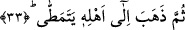

yâni fakirlere hiçbir şey vermiyorlar, onların karınlarının doyurulmalarını teşvik
etmiyorlardı. Âyette zekâta namazdan önce yer verilmesinin sebebi bu olabilir. Bir de “/namaz kılmadı” ifâdesinin sona getirilmesi -görüleceği üzere- âyet sonlarındaki
ses uyumunu korumak için olabilir.
“Ve” kendisine farz kılınan “namazı kılmadı.” Bu âyet-i kerîme kâfirlerin
cezâlandırılmaları konusunda dinin fürû’/ayrıntılı hükümleri konusunda mükellef
olduklarına delildir. Bir başka ifâdeyle; kâfir îmânı terk ettiği için cezâya ve kınanmaya
müstahâk olduğu gibi, -dünyada iken namazı edâ etmesi farz değilse bile- onu terk ettiği
için de cezâyı ve kınanmayı hak eder.
32. Aksine yalan saymış ve yüz çevirmişti.
“Aksine” ama Kur’an ve peygamber hakkında söylenenleri “yalanladı ve arkasını
döndü.” Allah ve peygamberine itâatten yüzçevirdi. Bu âyette yer alan “lakin” edâtı
âyetten ilk anda oluşacak kuşkuyu bertaraf etmek içindir. Çünkü önceki âyette kâfirin
tasdik etmediği ifâde buyuruluyor. Bu, o kişinin, peygamber ve Kur’anı yalan saymasını
gerektirmez. Çünkü şek/şüphe; tasdik ile tekzib arasında bir noktadadır. Şu hâlde bu iki
âyet birbirinin tekrarı olmuş olmaz.
33. Sonra da çalım sata sata yürüyerek kendi ehline (taraftarlarına) gitmişti.
“Sonra da” bununla iftihâr ederek, öğünerek “çalım sata sata yürüyerek” böbürlene
böbürlene “kendi ehline” âilesine veya arkadaşlarının yanına “gitti.”
Böbürlendi şeklinde tercüme edilen “yetemettâ” “matâ” kökünden türemedir. Bu kök
uzatmak anlamına gelir. Uzatma ile böbürlenme arasındaki anlam ilişkisine gelince;
böbürlenen kişi adımlarını uzatarak yürür. Bir başka ifâdeyle eğer bir insan böbürlene
böbürlene yürümek istiyorsa, adımlarını açarak yürümek zorundadır. Böylece adım
uzatmak kinâye yoluyla böbürlenmek anlamına kullanılmış olur. “Yetemettâ” fiili -
yukarda işâret ettiğimiz gibi- “matâ” kökünden türemiş olabileceği gibi, sırt anlamına
gelen “el-metâ” kökünden de türemiş olabilir. Sırt ile böbürlenme arasındaki anlam
ilişkisini açmak gerekirse; böbürlenen kişi yürürken sırtını geriye doğru eğer ve o
şekilde kasılarak hareket eder. Nitekim bir hadis-i şerifte Peygamber (s.a.) Efendimiz
şöyle buyururlar: “Ümmetim böbürlenerek yürüdüğü, kendilerine Farslılar ve
Romalılar hizmet ettiği zaman onlar kendi aralarında birbirlerine düşerler.”